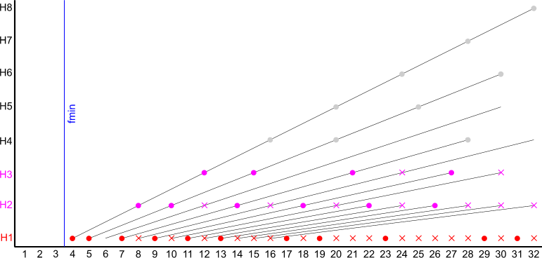

The FFT mode is intended for measurement of impedance and transfer functions. It calculates as follows:
with
input
channeltwo port
measurementimpedance
measurementL(t) response signal
voltage U(t)
R(t) reference signal
current I(t)
ESR, ESC and ESL is calculated by fitting Z(f). Therefore the weighted averages in the interval [famin, famax] are calculated as follows:
ESR = < ai > = < re(Z(f)) >
ESL = < bi / ω > = < im(Z(f)) / ω >
ESC = < −bi · ω > = < −im(Z(f)) · ω >
Of course, only one of ESL or ESC is reasonable, the positive one. The standard deviation of the above average values gives a coarse estimation of the reliability.
You will not get reasonable results when the impedance contains components that change with frequency. In this case you should view the frequency dependent results in the data file. Electrolytic capacitors tend to show such behavior.
This program analyze generates cyclic noise patterns with adjustable properties, like energy distribution and relatively prime frequencies. The cyclic nature of the patterns makes the spectrum discrete which is ideal for FFT analysis without the need of a window function.
The program creates the noise reference by inverse Discrete Fourier Transform. The amplitudes of the Fourier coefficients are calculated by:
ri = fiκ
The phase angles are chosen randomly.
The exponent κ controls the energy distribution. An homogeneous distribution (κ = 0) represents white noise. Positive values prefer high frequencies, negative values prefer low frequencies. κ = -1 creates pink noise.
All coefficients, outside the frequency range [fmin, fmax], are purged. This is particularly required when κ < 0, because otherwise the amplitude of the DC component becomes singular.
After the inverse Fourier Transform the wave form is normalized to 0dB FSR unless another level is selected by option gain.
The harmonics option excludes frequencies from the resulting spectrum if
Because of the second condition it is strongly recommended to set the minimum frequency at least higher than the nth harmonic of the ground frequency of the generated pattern. Otherwise a large gap would occur after the first used frequency.
The graph shows an example of the generated frequencies for a 64 sample noise pattern with 3 harmonics and a minimum frequency of 4:
analyze fsamp=64 fmin=3 fmax=32 harm3 wspec=noise.dat
Comments
In effect the noise pattern contains only energy at the frequencies with red circles. While all the frequencies with red or pink circles are used for analysis. See The Art of Noise for further information.